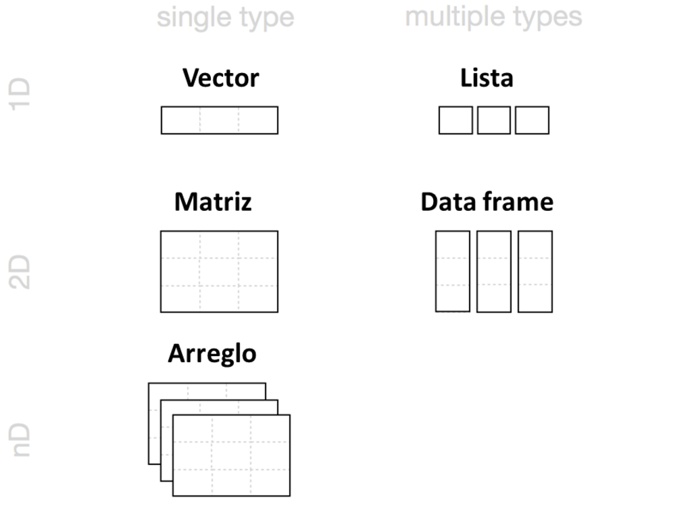

3 Objectos de R
En este capítulo, usará R para armar una baraja de 52 cartas.
Comenzará construyendo objetos R simples que representan naipes y luego avanzará hasta una tabla de datos completa. En resumen, creará el equivalente a una hoja de cálculo de Excel desde cero. Cuando hayas terminado, tu mazo de cartas se verá así:
cara palo valor
rey picas 13
reina picas 12
jota picas 11
diez picas 10
nueve picas 9
ocho picas 8
...¿Necesita crear un conjunto de datos desde cero para usarlo en R? Para nada. Puede cargar la mayoría de los conjuntos de datos en R con un simple paso, consulte Cargar datos. Pero este ejercicio le enseñará cómo R almacena datos y cómo puede ensamblar, o desensamblar, sus propios conjuntos de datos. También aprenderá sobre los diversos tipos de objetos disponibles para usar en R (¡no todos los objetos de R son iguales!). Considere este ejercicio como un rito de iniciación; al hacerlo, se convertirá en un experto en el almacenamiento de datos en R.
Comenzaremos con lo más básico. El tipo de objeto más simple en R es un vector atómico. Los vectores atómicos no tienen energía nuclear, pero son muy simples y aparecen en todas partes. Si observa lo suficientemente de cerca, verá que la mayoría de las estructuras en R se construyen a partir de vectores atómicos.
3.1 Vectores Atómicos
Un vector atómico es solo un simple vector de datos. De hecho, ya ha creado un vector atómico, su objeto dado del Proyecto 1: Dados Ponderados. Puede hacer un vector atómico agrupando algunos valores de datos con c:
is.vector
is.vector comprueba si un objeto es un vector atómico. Devuelve TRUE si el objeto es un vector atómico y FALSE en caso contrario.
También puedes hacer un vector atómico con un solo valor. R guarda valores individuales como un vector atómico de longitud 1:
length
length devuelve la longitud de un vector atómico.
Cada vector atómico almacena sus valores como un vector unidimensional y cada vector atómico solo puede almacenar un tipo de datos. Puede guardar diferentes tipos de datos en R utilizando diferentes tipos de vectores atómicos. En total, R reconoce seis tipos básicos de vectores atómicos: dobles, enteros, caracteres, lógicos, complejos y sin procesar.
Para crear su mazo de cartas, necesitará usar diferentes tipos de vectores atómicos para guardar diferentes tipos de información (texto y números). Puede hacer esto usando algunas convenciones simples cuando ingresa sus datos. Por ejemplo, puede crear un vector de números enteros al incluir una L mayúscula con su entrada. Puede crear un vector de caracteres encerrando su entrada entre comillas:
ent <- 1L
text <- "as"Cada tipo de vector atómico tiene su propia convención (descrita a continuación). R reconocerá la convención y la usará para crear un vector atómico del tipo apropiado. Si desea crear vectores atómicos que tengan más de un elemento, puede combinar un elemento con la función c de Paquetes y Páginas de ayuda. Use la misma convención con cada elemento:
Quizás se pregunte por qué R usa múltiples tipos de vectores. Los tipos de vectores ayudan a que R se comporte como cabría esperar. Por ejemplo, R hará operaciones matemáticas con vectores atómicos que contienen números, pero no con vectores atómicos que contienen cadenas de caracteres:
¡Pero nos estamos adelantando! Prepárese para saludar a los seis tipos de vectores atómicos en R.
3.1.1 Dobles
Un vector doble almacena números regulares. Los números pueden ser positivos o negativos, grandes o pequeños, y tener dígitos a la derecha del lugar decimal o no. En general, R guardará cualquier número que escriba en R como un doble. Entonces, por ejemplo, el dado que hiciste en Proyecto 1: Dados Ponderados era un objeto doble:
dado <- c(1, 2, 3, 4, 5, 6)
dado
## 1 2 3 4 5 6Por lo general, sabrá con qué tipo de objeto está trabajando en R (será obvio), pero también puede preguntarle a R qué tipo de objeto es un objeto con typeof. Por ejemplo:
typeof(dado)
## "double"Algunas funciones de R se refieren a los dobles como “numéricos”, y yo haré lo mismo con frecuencia. Doble es un término informático. Se refiere a la cantidad específica de bytes que usa su computadora para almacenar un número, pero encuentro que “numérico” es mucho más intuitivo cuando se hace ciencia de datos.
3.1.2 Enteros
Los vectores enteros almacenan números enteros, números que se pueden escribir sin un componente decimal. Como científico de datos, no usará el tipo de número entero con mucha frecuencia porque puede guardar los números enteros como un objeto doble.
Puede crear específicamente un número entero en R escribiendo un número seguido de una L mayúscula. Por ejemplo:
Tenga en cuenta que R no guardará un número como un entero a menos que incluya L. Los números enteros sin la L se guardarán como dobles. La única diferencia entre 4 y 4L es cómo R guarda el número en la memoria de tu computadora. Los números enteros se definen con mayor precisión en la memoria de su computadora que los dobles (a menos que el número entero sea muy grande o pequeño).
¿Por qué guardaría sus datos como un número entero en lugar de un doble? A veces, una diferencia en la precisión puede tener efectos sorprendentes. Su computadora asigna 64 bits de memoria para almacenar cada doble en un programa de R. Esto permite mucha precisión, pero algunos números no se pueden expresar exactamente en 64 bits, el equivalente a una secuencia de 64 unos y ceros. Por ejemplo, el número \(\pi\) contiene una secuencia interminable de dígitos a la derecha del lugar decimal. Su computadora debe redondear \(\pi\) a algo cercano, pero no exactamente igual a \(\pi\) para almacenar \(\pi\) en su memoria. Muchos números decimales comparten esta característica.
Como resultado, cada doble tiene una precisión de unos 16 dígitos significativos. Esto introduce un pequeño error. En la mayoría de los casos, este error de redondeo pasará desapercibido. Sin embargo, en algunas situaciones, el error de redondeo puede causar resultados sorprendentes. Por ejemplo, puede esperar que el resultado de la siguiente expresión sea cero, pero no lo es:
sqrt(2)^2 - 2
## 4.440892e-16La raíz cuadrada de dos no se puede expresar exactamente en 16 dígitos significativos. Como resultado, R tiene que redondear la cantidad y la expresión se resuelve en algo muy cercano a cero, pero no del todo.
Estos errores se conocen como errores de punto flotante, y hacer aritmética en estas condiciones se conoce como aritmética de punto flotante. La aritmética de punto flotante no es una característica de R; es una característica de la programación de computadoras. Por lo general, los errores de punto flotante no serán suficientes para arruinar su día. Solo tenga en cuenta que pueden ser la causa de resultados sorprendentes.
Puede evitar errores de punto flotante si evita los decimales y solo usa números enteros. Sin embargo, esta no es una opción en la mayoría de las situaciones de ciencia de datos. No puedes hacer muchas matemáticas con números enteros antes de que necesites un número no entero para expresar el resultado. Afortunadamente, los errores causados por la aritmética de punto flotante suelen ser insignificantes (y cuando no lo son, son fáciles de detectar). Como resultado, generalmente usará dobles en lugar de números enteros como científico de datos.
3.1.3 Caracteres
Un vector de caracteres almacena pequeños fragmentos de texto. Puede crear un vector de caracteres en R escribiendo un carácter o una cadena de caracteres entre comillas:
text <- c("Hola", "Mundo")
text
## "Hola" "Mundo"
typeof(text)
## "character"
typeof("Hola")
## "character"Los elementos individuales de un vector de caracteres se conocen como cadenas. Tenga en cuenta que una cadena puede contener más que solo letras. También puede ensamblar una cadena de caracteres a partir de números o símbolos.
Ejercicio 5.1 (Carácter or Número) ¿Puedes encontrar la diferencia entre una cadena de caracteres y un número? Aquí hay una prueba: ¿Cuáles de estos son cadenas de caracteres y cuáles son números? 1, "1", "uno".
Solución. "1" y "uno" son ambos cadenas de caracteres.
Las cadenas de caracteres pueden contener caracteres numéricos, pero eso no los convierte en numéricos. Son solo cadenas que tienen números en ellas. Puede distinguir cadenas de números reales porque las cadenas vienen entre comillas. De hecho, todo lo que esté entre comillas en R se tratará como una cadena de caracteres, independientemente de lo que aparezca entre las comillas.
Es fácil confundir objetos de R con cadenas de caracteres. ¿Por qué? Porque ambos aparecen como fragmentos de texto en código de R. Por ejemplo, x es el nombre de un objeto R llamado “x”, "x" es una cadena de caracteres que contiene el carácter “x”. Uno es un objeto que contiene datos sin procesar, el otro es un fragmento de datos sin procesar en sí mismo.
Espere un error cada vez que olvide sus comillas; R comenzará a buscar un objeto que probablemente no exista.
3.1.4 Lógicos
Los vectores lógicos almacenan TRUE y FALSE, la forma de R de datos booleanos. Los lógicos son muy útiles para hacer cosas como comparaciones:
3 > 4
## FALSECada vez que escriba TRUE o FALSE en letras mayúsculas (sin comillas), R tratará su entrada como datos lógicos. R también asume que T y F son abreviaturas de TRUE y FALSE, a menos que se definan en otra parte (por ejemplo, ‘T <- 500’). Dado que el significado de T y F puede cambiar, es mejor quedarse con TRUE y FALSE:
3.1.5 Complejo y Sin Procesar
Dobles, enteros, caracteres y lógicos son los tipos más comunes de vectores atómicos en R, pero R también reconoce dos tipos más: complejos y sin procesar. Es dudoso que alguna vez los use para analizar datos, pero aquí están por el bien de la minuciosidad.
Los vectores complejos almacenan números complejos. Para crear un vector complejo, agregue un término imaginario a un número con i:
Los vectores sin procesar almacenan bytes de datos sin procesar. Hacer vectores sin procesar se vuelve complicado, pero puedes hacer un vector sin procesar vacío de longitud n con raw(n). Consulte la página de ayuda de raw para obtener más opciones al trabajar con este tipo de datos:
Ejercicio 5.2 (Vector de Cartas) Cree un vector atómico que almacene solo los nombres de las caras de las cartas en una escalera real, por ejemplo, el as de picas, el rey de picas, la reina de picas, la jota de picas y el diez de picas. El nombre de la cara del as de picas sería “as” y “picas” es el palo.
¿Qué tipo de vector usarás para guardar los nombres?
Solución. Un vector de caracteres es el tipo de vector atómico más apropiado para guardar los nombres de las cartas. Puedes crear uno con la función c si pones cada nombre entre comillas:
mano <- c("as", "rey", "reina", "jota", "diez")
mano
## "as" "rey" "reina" "jota" "diez"
typeof(mano)
## "character"Esto crea un grupo unidimensional de nombres de cartas. ¡Excelente trabajo! Ahora hagamos una estructura de datos más sofisticada, una tabla bidimensional de nombres de cartas y palos. Puede construir un objeto más sofisticado a partir de un vector atómico dándole algunos atributos y asignándole una clase.
3.2 Atributos
Un atributo es una pieza de información que puede adjuntar a un vector atómico (o cualquier objeto de R). El atributo no afectará ninguno de los valores del objeto y no aparecerá cuando muestre su objeto. Puede pensar en un atributo como “metadatos”; es solo un lugar conveniente para colocar información asociada con un objeto. R normalmente ignorará estos metadatos, pero algunas funciones de R verificarán atributos específicos. Estas funciones pueden usar los atributos para hacer cosas especiales con los datos.
Puedes ver qué atributos tiene un objeto con attributes. attributes devolverá NULL si un objeto no tiene atributos. Un vector atómico, como dado, no tendrá ningún atributo a menos que le des alguno:
attributes(dado)
## NULLNULL
R usa NULL para representar el conjunto nulo, un objeto vacío. NULL a menudo es devuelto por funciones cuyos valores no están definidos. Puede crear un objeto NULL escribiendo NULL en letras mayúsculas.
3.2.1 Nombres
Los atributos más comunes para dar un vector atómico son nombres, dimensiones (dim) y clases. Cada uno de estos atributos tiene su propia función auxiliar que puede usar para otorgar atributos a un objeto. También puede usar las funciones auxiliares para buscar el valor de estos atributos para los objetos que ya los tienen. Por ejemplo, puedes buscar el valor del atributo de nombres de dado con names:
names(dado)
## NULLNULL significa que dado no tiene un atributo de nombres. Puedes darle uno a dado asignando un vector de caracteres a la salida de names. El vector debe incluir un nombre para cada elemento en dado:
Ahora dado tiene el atributo nombres:
names(dado)
## "uno" "dos" "tres" "cuatro" "cinco" "seis"
attributes(dado)
## $names
## [1] "uno" "dos" "tres" "cuatro" "cinco" "seis"R mostrará los nombres sobre los elementos de dado cada vez que mires el vector:
dado
## uno dos tres cuatro cinco seis
## 1 2 3 4 5 6 Sin embargo, los nombres no afectarán los valores reales del vector, ni los nombres se verán afectados cuando manipule los valores del vector:
dado + 1
## uno dos tres cuatro cinco seis
## 2 3 4 5 6 7También puede usar names para cambiar el atributo de nombres o eliminarlo todo junto. Para cambiar los nombres, asigna un nuevo conjunto de etiquetas a names:
names(dado) <- c("one", "two", "three", "four", "five", "six")
dado
## one two three four five six
## 1 2 3 4 5 6 Para eliminar el atributo de nombres, configúrelo en NULL:
names(dado) <- NULL
dado
## 1 2 3 4 5 63.2.2 Dimensiones
Puede transformar un vector atómico en una matriz n-dimensional dándole un atributo de dimensiones con dim. Para hacer esto, establezca el atributo dim en un vector numérico de longitud n. R reorganizará los elementos del vector en n dimensiones. Cada dimensión tendrá tantas filas (o columnas, etc.) como el valor n del vector dim. Por ejemplo, puede reorganizar dado en una matriz de 2 × 3 (que tiene 2 filas y 3 columnas):
o en una mariz de 3 × 2 (que tiene 3 filas y 2 columnas):
o en hipercubo de 1 × 2 × 3 (que tiene 1 fila, 2 columnas, y 3 “rebanadas”). Esta es una estructura tridimensional, pero R necesitará mostrarla rebanada por rebanada en la pantalla bidimensional de su computadora:
dim(dado) <- c(1, 2, 3)
dado
## , , 1
##
## [,1] [,2]
## [1,] 1 2
##
## , , 2
##
## [,1] [,2]
## [1,] 3 4
##
## , , 3
##
## [,1] [,2]
## [1,] 5 6R siempre usará el primer valor en dim para el número de filas y el segundo valor para el número de columnas. En general, las filas siempre van primero en las operaciones de R que se ocupan tanto de filas como de columnas.
Puede notar que no tiene mucho control sobre cómo R reorganiza los valores en filas y columnas. Por ejemplo, R siempre llena cada matriz por columnas, en lugar de por filas. Si desea tener más control sobre este proceso, puede usar una de las funciones auxiliares de R, matrix o array. Hacen lo mismo que cambiar el atributo dim, pero proporcionan argumentos adicionales para personalizar el proceso.
3.3 Matrices
Las matrices almacenan valores en una matriz bidimensional, como una matriz de álgebra lineal. Para crear uno, primero dale a matrix un vector atómico para reorganizar en una matriz. Luego, defina cuántas filas debe haber en la matriz configurando el argumento nrow en un número. matrix organizará su vector de valores en una matriz con el número especificado de filas. Alternativamente, puede establecer el argumento ncol, que le dice a R cuántas columnas incluir en la matriz:
m <- matrix(dado, nrow = 2)
m
## [,1] [,2] [,3]
## [1,] 1 3 5
## [2,] 2 4 6matrix llenará la matriz columna por columna por defecto, pero puedes llenar la matriz fila por fila si incluyes el argumento byrow = TRUE:
m <- matrix(dado, nrow = 2, byrow = TRUE)
m
## [,1] [,2] [,3]
## [1,] 1 2 3
## [2,] 4 5 6matrix también tiene otros argumentos predeterminados que puede usar para personalizar su matriz. Puede leer sobre ellos en la página de ayuda de matrix (accesible por ?matrix).
3.4 Arreglos
La función array crea una matriz de n dimensiones. Por ejemplo, podría usar array para clasificar los valores en un cubo de tres dimensiones o un hipercubo en 4, 5 o n dimensiones. array no es tan personalizable como matrix y básicamente hace lo mismo que configurar el atributo dim. Para usar array, proporcione un vector atómico como primer argumento y un vector de dimensiones como segundo argumento, ahora llamado dim:
ar <- array(c(11:14, 21:24, 31:34), dim = c(2, 2, 3))
ar
## , , 1
##
## [,1] [,2]
## [1,] 11 13
## [2,] 12 14
##
## , , 2
##
## [,1] [,2]
## [1,] 21 23
## [2,] 22 24
##
## , , 3
##
## [,1] [,2]
## [1,] 31 33
## [2,] 32 34Ejercicio 5.3 (Hacer una Matriz) Cree la siguiente matriz, que almacena el nombre y el palo de cada carta en una escalera real.
## [,1] [,2]
## [1,] "as" "picas"
## [2,] "rey" "picas"
## [3,] "reina" "picas"
## [4,] "jota" "picas"
## [5,] "diez" "picas"Solución. Hay más de una forma de construir esta matriz, pero en todos los casos, deberá comenzar creando un vector de caracteres con 10 valores. Si comienza con el siguiente vector de caracteres, puede convertirlo en una matriz con cualquiera de los siguientes tres comandos:
mano1 <- c("as", "rey", "reina", "jota", "diez", "picas", "picas",
"picas", "picas", "picas")
matrix(mano1, nrow = 5)
matrix(mano1, ncol = 2)
dim(mano1) <- c(5, 2)También puede comenzar con un vector de caracteres que enumere las cartas en un orden ligeramente diferente. En este caso, deberá pedirle a R que llene la matriz fila por fila en lugar de columna por columna:
3.5 Clases
Tenga en cuenta que cambiar las dimensiones de su objeto no cambiará el tipo del objeto, pero cambiará el atributo clase del objeto:
Una matriz es un caso especial de un vector atómico. Por ejemplo, la matriz dado es un caso especial de vector doble. Cada elemento de la matriz sigue siendo un doble, pero los elementos se han organizado en una nueva estructura. R agregó un atributo de clase a dado cuando cambiaste sus dimensiones. Esta clase describe el nuevo formato de dado. Muchas funciones de R buscarán específicamente el atributo clase de un objeto y luego manejarán el objeto de una manera predeterminada en función del atributo.
Tenga en cuenta que el atributo clase de un objeto no siempre aparecerá cuando ejecute attributes; es posible que deba buscarlo específicamente con class:
attributes(dado)
## $dim
## [1] 2 3Puede aplicar class a objetos que no tienen un atributo de clase. class devolverá un valor basado en el tipo atómico del objeto. Tenga en cuenta que la “clase” de un doble es “numérica”, una desviación extraña, pero por la que estoy agradecido. Creo que la propiedad más importante de un vector doble es que contiene números, una propiedad que “numeric” hace evidente:
También puede usar class para establecer el atributo clase de un objeto, pero esto suele ser una mala idea. R esperará que los objetos de una clase compartan ciertas características, como atributos, que su objeto puede no poseer. Aprenderá a crear y utilizar sus propias clases en Proyecto 3: Máquina Tragamonedas.
3.5.1 Fechas y Horarios
El sistema de atributos permite que R represente más tipos de datos que solo dobles, enteros, caracteres, lógicos, complejos y sin procesar. La hora parece una cadena de caracteres cuando la visualizas, pero su tipo de datos es en realidad "doble", y su clase es "POSIXct" "POSIXt" (tiene dos clases):
ahora <- Sys.time()
ahora
## "2014-03-17 12:00:00 UTC"
typeof(ahora)
## "double"
class(ahora)
## "POSIXct" "POSIXt" POSIXct es un marco ampliamente utilizado para representar fechas y horas. En el marco de POSIXct, cada hora se representa por la cantidad de segundos que han pasado entre la hora y las 12:00 a. m. del 1 de enero de 1970 (en la zona Universal Time Coordinated (UTC)). Por ejemplo, el tiempo anterior ocurre 1 395 057 600 segundos después. Entonces, en el sistema POSIXct, el tiempo se guardaría como 1395057600.
R crea el objeto de tiempo construyendo un vector doble con un elemento, 1395057600. Puede ver este vector eliminando el atributo clase de ahora, o usando la función unclass, que hace lo mismo:
unclass(ahora)
## 1395057600R luego le da al vector doble un atributo clase que contiene dos clases, "POSIXct" y "POSIXt". Este atributo alerta a las funciones de R de que están tratando con un tiempo POSIXct, para que puedan tratarlo de una manera especial. Por ejemplo, las funciones R usarán el estándar POSIXct para convertir la hora en una cadena de caracteres fácil de usar antes de mostrarla.
Puede aprovechar este sistema dando la clase POSIXct a objetos R aleatorios. Por ejemplo, ¿alguna vez se ha preguntado qué día era un millón de segundos después de las 12:00 a. m. del 1 de enero de 1970?
millon <- 1000000
millon
## 1e+06
class(millon) <- c("POSIXct", "POSIXt")
millon
## "1970-01-12 13:46:40 UTC"12 de enero de 1970. Vaya. Un millón de segundos pasan más rápido de lo que piensas. Esta conversión funcionó bien porque la clase POSIXct no depende de ningún atributo adicional, pero en general, forzar la clase de un objeto es una mala idea.
Hay muchas clases diferentes de datos en R y sus paquetes, y cada día se inventan nuevas clases. Sería difícil aprender sobre cada clase, pero no es necesario. La mayoría de las clases solo son útiles en situaciones específicas. Dado que cada clase viene con su propia página de ayuda, puede esperar para aprender sobre una clase hasta que la encuentre. Sin embargo, hay una clase de datos que es tan omnipresente en R que debería conocerla junto con los tipos de datos atómicos. Esa clase es factores.
3.5.2 Factores
Los factores son la forma en que R almacena información categórica, como el origen étnico o el color de ojos. Piense en un factor como algo así como un género; solo puede tener ciertos valores (masculino o femenino), y estos valores pueden tener su propio orden idiosincrático (damas primero). Este arreglo hace que los factores sean muy útiles para registrar los niveles de tratamiento de un estudio y otras variables categóricas.
Para hacer un factor, pase un vector atómico a la función factor. R recodificará los datos en el vector como enteros y almacenará los resultados en un vector entero. R también agregará un atributo niveles (levels en inglés) al entero, que contiene un conjunto de etiquetas para mostrar los valores de los factores, y un atributo class, que contiene la clase factor:
genero <- factor(c("masculino", "femenino", "femenino", "masculino"))
typeof(genero)
## "integer"
attributes(genero)
## $levels
## [1] "femenino" "masculino"
##
## $class
## [1] "factor"Puedes ver exactamente cómo R almacena tu factor con unclass:
unclass(genero)
## [1] 2 1 1 2
## attr(,"levels")
## [1] "femenino" "masculino" R usa el atributo de niveles cuando muestra el factor, como verá. R mostrará cada 1 como femenino, la primera etiqueta en el vector de niveles, y cada 2 como masculino, la segunda etiqueta. Si el factor incluyera 3, se mostrarían como la tercera etiqueta, y así sucesivamente:
genero
## masculino femenino femenino masculino
## Levels: femenino masculinoLos factores facilitan la colocación de variables categóricas en un modelo estadístico porque las variables ya están codificadas como números. Sin embargo, los factores pueden resultar confusos, ya que parecen cadenas de caracteres pero se comportan como números enteros.
R a menudo intentará convertir cadenas de caracteres en factores cuando cargue y cree datos. En general, tendrá una experiencia más fluida si no permite que R haga factores hasta que los solicite. Te mostraré cómo hacer esto cuando comencemos a leer datos.
Puede convertir un factor en una cadena de caracteres con la función as.character. R conservará la versión de visualización del factor, no los números enteros almacenados en la memoria:
as.character(genero)
## "masculino" "femenino" "femenino" "masculino" Ahora que comprende las posibilidades que brindan los vectores atómicos de R, hagamos un tipo de naipe más complicado.
Ejercicio 5.4 (Escriba una Carta) Muchos juegos de cartas asignan un valor numérico a cada carta. Por ejemplo, en el blackjack, cada carta con figuras vale 10 puntos, cada carta con números vale entre 2 y 10 puntos, y cada as vale 1 u 11 puntos, dependiendo de la puntuación final.
Haz un naipe virtual combinando “as”, “corazón” y 1 en un vector. ¿Qué tipo de vector atómico resultará? Comprueba si tienes razón.
Solución. Es posible que hayas adivinado que este ejercicio no saldría bien. Cada vector atómico solo puede almacenar un tipo de datos. Como resultado, R convierte todos sus valores en cadenas de caracteres:
carta <- c("as", "corazones", 1)
carta
## "as" "corazones" "1" Esto causará problemas si desea hacer operaciones matemáticas con ese valor en puntos, por ejemplo, para ver quién ganó su juego de blackjack.
Tipos de datos en vectores
Si intenta poner varios tipos de datos en un vector, R convertirá los elementos en un solo tipo de datos.
Dado que las matrices y los arreglos son casos especiales de vectores atómicos, sufren el mismo comportamiento. Cada uno solo puede almacenar un tipo de datos.
Esto crea un par de problemas. Primero, muchos conjuntos de datos contienen múltiples tipos de datos. Los programas simples como Excel y Numbers pueden guardar múltiples tipos de datos en el mismo conjunto de datos, y debería esperar que R también pueda hacerlo. No te preocupes, puede.
En segundo lugar, la coerción es un comportamiento común en R, por lo que querrá saber cómo funciona.
3.6 Coerción
El comportamiento de coerción de R puede parecer inconveniente, pero no es arbitrario. R siempre sigue las mismas reglas cuando obliga a los tipos de datos. Una vez que esté familiarizado con estas reglas, puede usar el comportamiento de coerción de R para hacer cosas sorprendentemente útiles.
Entonces, ¿cómo coacciona R los tipos de datos? Si una cadena de caracteres está presente en un vector atómico, R convertirá todo lo demás en el vector en cadenas de caracteres. Si un vector solo contiene lógicos y números, R convertirá los lógicos en números; cada TRUE se convierte en 1, y cada FALSE se convierte en 0, como se muestra en la Figura Figura 3.1.
Este arreglo preserva la información. Es fácil mirar una cadena de caracteres y decir qué información solía contener. Por ejemplo, puede detectar fácilmente los orígenes de "TRUE" y "5". También puede volver a transformar fácilmente un vector de 1 y 0 en TRUE y FALSE.
R usa las mismas reglas de coerción cuando intenta hacer operaciones matemáticas con valores lógicos. Entonces el siguiente código:
se convertirá:
Esto significa que sum contará el número de TRUE en un vector lógico (y mean calculará la proporción de TRUE). Listo, ¿eh?
Puede pedirle explícitamente a R que convierta datos de un tipo a otro con las funciones as. R convertirá los datos siempre que haya una forma sensata de hacerlo:
as.character(1)
## "1"
as.logical(1)
## TRUE
as.numeric(FALSE)
## 0Ahora sabe cómo R coacciona los tipos de datos, pero esto no lo ayudará a salvar una carta. Para hacer eso, deberá evitar la coerción por completo. Puedes hacer esto usando un nuevo tipo de objeto, una lista.
Antes de ver las listas, abordemos una pregunta que podría tener en mente.
Muchos conjuntos de datos contienen múltiples tipos de información. La incapacidad de vectores, matrices y arreglos para almacenar múltiples tipos de datos parece ser una limitación importante. Entonces, ¿por qué molestarse con ellos?
En algunos casos, usar un solo tipo de datos es una gran ventaja. Los vectores, las matrices y los arreglos hacen que sea muy fácil hacer operaciones matemáticas con grandes conjuntos de números porque R sabe que puede manipular cada valor de la misma manera. Las operaciones con vectores, matrices y arreglos también tienden a ser rápidas porque los objetos son muy fáciles de almacenar en la memoria.
En otros casos, permitir un solo tipo de datos no es una desventaja. Los vectores son la estructura de datos más común en R porque almacenan muy bien las variables. Cada valor de una variable mide la misma propiedad, por lo que no es necesario utilizar diferentes tipos de datos.
3.7 Listas
Las listas son como vectores atómicos porque agrupan datos en un conjunto unidimensional. Sin embargo, las listas no agrupan valores individuales; las listas agrupan objetos de R, como vectores atómicos y otras listas. Por ejemplo, puede crear una lista que contenga un vector numérico de longitud 31 en su primer elemento, un vector de caracteres de longitud 1 en su segundo elemento y una nueva lista de longitud 2 en su tercer elemento. Para hacer esto, use la función list.
list crea una lista de la misma manera que c crea un vector. Separe cada elemento de la lista con una coma:
lista1 <- list(100:130, "R", list(TRUE, FALSE))
lista1
## [[1]]
## [1] 100 101 102 103 104 105 106 107 108 109 110 111 112
## [14] 113 114 115 116 117 118 119 120 121 122 123 124 125
## [27] 126 127 128 129 130
##
## [[2]]
## [1] "R"
##
## [[3]]
## [[3]][[1]]
## [1] TRUE
##
## [[3]][[2]]
## [1] FALSEDejé la notación [1] en la salida para que puedas ver cómo cambia para las listas. Los índices entre corchetes le indican qué elemento de la lista se está mostrando. Los índices de un solo paréntesis le indican qué subelemento de un elemento se muestra. Por ejemplo, 100 es el primer subelemento del primer elemento de la lista. "R" es el primer subelemento del segundo elemento. Esta notación de dos sistemas surge porque cada elemento de una lista puede ser cualquier objeto R, incluido un nuevo vector (o lista) con sus propios índices.
Las listas son un tipo básico de objeto en R, a la par de los vectores atómicos. Al igual que los vectores atómicos, se utilizan como bloques de construcción para crear muchos tipos más sofisticados de objetos de R.
Como puede imaginar, la estructura de las listas puede volverse bastante complicada, pero esta flexibilidad hace que las listas sean una herramienta de almacenamiento útil para todo uso en R: puede agrupar cualquier cosa con una lista.
Sin embargo, no todas las listas tienen que ser complicadas. Puede almacenar una carta de juego en una lista muy simple.
Ejercicio 5.5 (Usar una Lista para Crear una Carta) Use una lista para almacenar una sola carta, como el as de corazones, que tiene un valor de punto de uno. La lista debe guardar la cara de la carta, el palo y el valor del punto en elementos separados.
Solución. Puedes crear tu carta así. En el siguiente ejemplo, el primer elemento de la lista es un vector de caracteres (de longitud 1). El segundo elemento también es un vector de caracteres y el tercer elemento es un vector numérico:
carta <- list("as", "corazones", 1)
carta
## [[1]]
## [1] "as"
##
## [[2]]
## [1] "corazones"
##
## [[3]]
## [1] 1También puede usar una lista para almacenar una baraja completa de cartas. Dado que puede guardar una sola carta de juego como una lista, puede guardar una baraja de cartas de juego como una lista de 52 sublistas (una para cada carta). Pero no nos molestemos, hay una forma mucho más limpia de hacer lo mismo. Puede usar una clase especial de lista, conocida como data frames.
3.8 Data Frames
Data frames son la versión bidimensional de una lista. Son, por mucho, la estructura de almacenamiento más útil para el análisis de datos y proporcionan una forma ideal de almacenar una baraja completa de cartas. Puede pensar en un data frame como el equivalente de R a la hoja de cálculo de Excel porque almacena datos en un formato similar.
Data frames agrupan vectores en una tabla bidimensional. Cada vector se convierte en una columna en la tabla. Como resultado, cada columna de un data frame puede contener un tipo diferente de datos; pero dentro de una columna, cada celda debe tener el mismo tipo de datos, como en la Figura Figura 3.2.

Crear un data frame a mano requiere escribir mucho, pero puede hacerlo (si lo desea) con la función data.frame. Proporcione a data.frame cualquier número de vectores, cada uno separado por una coma. Cada vector debe establecerse igual a un nombre que describa el vector. data.frame convertirá cada vector en una columna del nuevo data frame:
df <- data.frame(cara = c("as", "dos", "seis"),
palo = c("treboles", "treboles", "treboles"), valor = c(1, 2, 3))
df
## cara palo valor
## as treboles 1
## dos treboles 2
## seis treboles 3Deberá asegurarse de que cada vector tenga la misma longitud (o se puede hacer así con las reglas de reciclaje de R; consulte la figura Figura 1.4, ya que los data frames no pueden combinar columnas de diferentes longitudes.
En el código anterior, nombré los argumentos en data.frame cara, palo y valor, pero puedes nombrar los argumentos como quieras. data.frame utilizará los nombres de sus argumentos para etiquetar las columnas del data frame.
Nombres
También puede dar nombres a una lista o vector cuando crea uno de estos objetos. Use la misma sintaxis que con data.frame:
list(cara = "as", palo = "corazones", value = 1)c(cara = "as", palo = "corazones", value = "one")
Los nombres se almacenarán en el atributo names del objeto.
Si observa el tipo de data frame, verá que es una lista. De hecho, cada data frame es una lista con la clase data.frame. Puede ver qué tipos de objetos se agrupan en una lista (o data frame) con la función str:
typeof(df)
## "list"
class(df)
## "data.frame"
str(df)
## 'data.frame': 3 obs. of 3 variables:
## $ cara : Factor w/ 3 levels "as","seis","dos": 1 3 2
## $ palo : Factor w/ 1 level "treboles": 1 1 1
## $ valor: num 1 2 3Observe que R guardó sus cadenas de caracteres como factores. ¡Te dije que a R le gustan los factores! No es un gran problema aquí, pero puede evitar este comportamiento agregando el argumento stringsAsFactors = FALSE a data.frame:
df <- data.frame(cara = c("as", "dos", "seis"),
palo = c("treboles", "treboles", "treboles"), value = c(1, 2, 3),
stringsAsFactors = FALSE)Un data frame es una excelente manera de construir una baraja completa de cartas. Puede convertir cada fila del data frame en una carta de juego y cada columna en un tipo de valor, cada uno con su propio tipo de datos apropiado. El data frame se vería así:
## cara palo valor
## rey picas 13
## reina picas 12
## jota picas 11
## diez picas 10
## nueve picas 9
## ocho picas 8
## siete picas 7
## seis picas 6
## cinco picas 5
## cuatro picas 4
## tres picas 3
## dos picas 2
## as picas 1
## rey treboles 13
## reina treboles 12
## jota treboles 11
## diez treboles 10
## ... y así sucesivamente.Podría crear este data frame con data.frame, ¡pero mire la escritura involucrada! Necesitas escribir tres vectores, cada uno con 52 elementos:
baraja <- data.frame(
cara = c("rey", "reina", "jota", "diez", "nueve", "ocho", "siete", "seis",
"cinco", "cuatro", "tres", "dos", "as", "rey", "reina", "jota", "diez",
"nueve", "ocho", "siete", "seis", "cinco", "cuatro", "tres", "dos", "as",
"rey", "reina", "jota", "diez", "nueve", "ocho", "siete", "seis", "cinco",
"cuatro", "tres", "dos", "as", "rey", "reina", "jota", "diez", "nueve",
"ocho", "siete", "seis", "cinco", "cuatro", "tres", "dos", "as"),
palo = c("picas", "picas", "picas", "picas", "picas", "picas",
"picas", "picas", "picas", "picas", "picas", "picas", "picas",
"treboles", "treboles", "treboles", "treboles", "treboles", "treboles", "treboles", "treboles",
"treboles", "treboles", "treboles", "treboles", "treboles", "diamantes", "diamantes",
"diamantes", "diamantes", "diamantes", "diamantes", "diamantes", "diamantes",
"diamantes", "diamantes", "diamantes", "diamantes", "diamantes", "corazones",
"corazones", "corazones", "corazones", "corazones", "corazones", "corazones", "corazones",
"corazones", "corazones", "corazones", "corazones", "corazones"),
valor = c(13, 12, 11, 10, 9, 8, 7, 6, 5, 4, 3, 2, 1, 13, 12, 11, 10, 9, 8,
7, 6, 5, 4, 3, 2, 1, 13, 12, 11, 10, 9, 8, 7, 6, 5, 4, 3, 2, 1, 13, 12, 11,
10, 9, 8, 7, 6, 5, 4, 3, 2, 1)
)Debe evitar escribir grandes conjuntos de datos a mano siempre que sea posible. Escribir invita a errores tipográficos y errores. Siempre es mejor adquirir grandes conjuntos de datos como un archivo de computadora. Luego puede pedirle a R que lea el archivo y almacene el contenido como un objeto.
Creé un archivo para que lo cargues que contiene un data frame de información de naipes, así que no te preocupes por escribir el código. En su lugar, dirija su atención hacia la carga de datos en R.
3.9 Cargar Datos
Puede cargar el data frame Mazo desde el archivo mazo.csv. Tómese un momento para descargar el archivo antes de seguir leyendo. Visite el sitio web, haga clic en “Descargar Zip” y luego descomprima y abra la carpeta que descarga su navegador web. mazo.csv estará dentro.
mazo.csv es un archivo de valores separados por comas, o CSV para abreviar. Los CSV son archivos de texto sin formato, lo que significa que puede abrirlos en un editor de texto (así como en muchos otros programas). Si abre mazo.csv, notará que contiene una tabla de datos similar a la siguiente tabla. Cada fila de la tabla se guarda en su propia línea y se usa una coma para separar las celdas dentro de cada fila. Cada archivo CSV comparte este formato básico:
"cara","palo","valor"
"rey","picas",13
"reina","picas",12
"jota","picas",11
"diez","picas",10
"nueve","picas",9
... y así sucesivamente.La mayoría de las aplicaciones de ciencia de datos pueden abrir archivos de texto sin formato y exportar datos como archivos de texto sin formato. Esto hace que los archivos de texto sin formato sean una especie de lingua franca para la ciencia de datos.
Para cargar un archivo de texto sin formato en R, haga clic en el icono Import Dataset en RStudio, que se muestra en la Figura Figura 3.3. Luego seleccione “From text file (base)”.
RStudio le pedirá que seleccione el archivo que desea importar, luego abrirá un asistente para ayudarlo a importar los datos, como en la Figura Figura 3.4. Utilice el asistente para decirle a RStudio qué nombre dar al conjunto de datos. También puede usar el asistente para decirle a RStudio qué carácter usa el conjunto de datos como separador, qué carácter usa para representar decimales (generalmente un punto en los Estados Unidos y una coma en Europa) y si el conjunto de datos viene o no con una fila de nombres de columna (conocido como header). Para ayudarlo, el asistente le muestra cómo se ve el archivo sin procesar, así como también cómo se verán los datos cargados según la configuración de entrada.
También puede desmarcar la casilla “Strings as factors” en el asistente. Recomiendo hacer esto. Si lo hace, R cargará todas sus cadenas de caracteres como cadenas de caracteres. Si no lo hace, R los convertirá en factores.

Una vez que todo se vea bien, haga clic en Import. RStudio leerá los datos y los guardará en un data frame. RStudio también abrirá un visor de datos, para que pueda ver sus nuevos datos en un formato de hoja de cálculo. Esta es una buena manera de verificar que todo salió como se esperaba. Si todo funcionó bien, su archivo debería aparecer en una pestaña View de RStudio, como se ve en la Figura Figura 3.5. Puede examinar el data frame en la consola con head(mazo)
Datos en Línea
Puede cargar un archivo de texto sin formato directamente desde Internet haciendo click en Import Dataset > From Text (readr) y copiando la url del archivo en la casilla “File/URL” del asistente de importación de RStudio. Para poder utlizar esta opción debera instalar el paquete readr.
Ahora es tu turno. Descargue mazo.csv e impórtelo a RStudio. Asegúrese de guardar la salida en un objeto de R llamado mazo: lo usará en los próximos capítulos. Si todo va correctamente, las primeras líneas de su data frame deberían verse así:
head(mazo)
## cara palo valor
## rey picas 13
## reina picas 12
## jota picas 11
## diez picas 10
## nueve picas 9
## ocho picas 8head y tail son dos funciones que proporcionan una manera fácil de echar un vistazo a grandes conjuntos de datos. head devolverá solo las primeras seis filas del conjunto de datos, y tail devolverá solo las últimas seis filas. Para ver un número diferente de filas, dé a head o tail un segundo argumento, el número de filas que le gustaría ver, por ejemplo, head (mazo, 10).
R puede abrir muchos tipos de archivos, no solo CSV. Visite Cargar y Guardar Datos en R para obtener información sobre cómo abrir otros tipos comunes de archivos en R.
3.10 Guardar Datos
Antes de continuar, guardemos una copia de mazo como un nuevo archivo .csv. De esa manera, puede enviarlo por correo electrónico a un colega, almacenarlo en una memoria USB o abrirlo en un programa diferente. Puede guardar cualquier data frame en R en un archivo .csv con el comando write.csv. Para guardar mazo, ejecute:
write.csv(mazo, file = "cartas.csv", row.names = FALSE)R convertirá su data frame en un archivo de texto sin formato con el formato de valores separados por comas y guardará el archivo en su directorio de trabajo. Para ver dónde está su directorio de trabajo, ejecute getwd(). Para cambiar la ubicación de su directorio de trabajo, visite Session > Set Working Directory > Choose Directory en la barra de menú de RStudio.
Puede personalizar el proceso de guardado con el amplio conjunto de argumentos opcionales de write.csv (consulte ?write.csv para obtener más detalles). Sin embargo, hay tres argumentos que debería usar cada vez que ejecute write.csv.
Primero, debe darle a write.csv el nombre del data frame que desea guardar. A continuación, debe proporcionar un nombre de archivo para darle a su archivo. R tomará este nombre literalmente, así que asegúrese de proporcionar una extensión.
Finalmente, debe agregar el argumento row.names = FALSE. Esto evitará que R agregue una columna de números al comienzo de su data frame. Estos números identificarán sus filas del 1 al 52, pero es poco probable que cualquier programa en el que abra cartas.csv comprenda el sistema de nombres de fila. Lo más probable es que el programa asuma que los nombres de las filas son la primera columna de datos en su data frame. De hecho, esto es exactamente lo que asumirá R si vuelve a abrir cartas.csv. Si guarda y abre cartas.csv varias veces en R, notará que se forman columnas duplicadas de números de fila al comienzo de su data frame. No puedo explicar por qué R hace esto, pero puedo explicar cómo evitarlo: use row.names = FALSE siempre que guarde datos con write.csv.
Para obtener más detalles sobre cómo guardar archivos, incluido cómo comprimir archivos guardados y cómo guardar archivos en otros formatos, consulte Cargar y Guardar Datos en R.
Buen trabajo. Ahora tiene una baraja de cartas virtual con la que trabajar. Tómese un respiro y, cuando regrese, comenzaremos a escribir algunas funciones para usar en su mazo.
3.11 Resumen
Puede guardar datos en R con cinco objetos diferentes, que le permiten almacenar diferentes tipos de valores en diferentes tipos de relaciones, como en la Figura Figura 3.6. De estos objetos, los data frame son, por mucho, los más útiles para la ciencia de datos. Los data frame almacenan una de las formas de datos más comunes utilizadas en la ciencia de datos, los datos tabulares.

Puede cargar datos tabulares en un data frame con el botón Import Dataset de RStudio, siempre que los datos se guarden como un archivo de texto sin formato. Este requisito no es tan limitante como parece. La mayoría de los programas de software pueden exportar datos como un archivo de texto sin formato. Entonces, si tiene un archivo de Excel (por ejemplo), puede abrir el archivo en Excel y exportar los datos como CSV para usar con R. De hecho, abrir un archivo en su programa original es una buena práctica. Los archivos de Excel usan metadatos, como hojas y fórmulas, que ayudan a Excel a trabajar con el archivo. R puede intentar extraer datos sin procesar del archivo, pero no será tan bueno para hacerlo como lo es Microsoft Excel. Ningún programa es mejor para convertir archivos de Excel que Excel. Del mismo modo, ningún programa es mejor para convertir archivos SAS Xport que SAS, y así sucesivamente.
Sin embargo, es posible que se encuentre con un archivo específico del programa, pero no con el programa que lo creó. No querría comprar una licencia SAS de varios miles de dólares solo para abrir un archivo SAS. Afortunadamente, R puede abrir muchos tipos de archivos, incluidos archivos de otros programas y bases de datos. R incluso tiene sus propios formatos específicos del programa que pueden ayudarlo a ahorrar memoria y tiempo si sabe que trabajará completamente en R. Si desea obtener más información sobre todas sus opciones para cargar y guardar datos en R, consulte Cargar y Guardar Datos en R.
Notación de R se basará en las habilidades que aprendió en este capítulo. Aquí, aprendió cómo almacenar datos en R. En Notación de R, aprenderá cómo acceder a los valores una vez que se han almacenado. También escribirá dos funciones que le permitirán comenzar a usar su mazo, una función para barajar y una función para repartir.